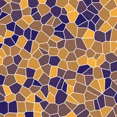

وورونوئی سیلز

لیئر کے غیر شفاف حصوں کو بے ترتیب مقامات کے گرد سیلز کے پیٹرن سے بھرتا ہے۔
سیٹنگز
| سیٹنگ | قسم | رینج | ڈیفالٹ |
|---|---|---|---|
| اسکیل | نمبر | 0.01 سے 100 تک | 1 |
| فیز | نمبر | -99 سے 99 تک | 0 |
| لائن چوڑائی | نمبر | 0 سے 1 تک | 0 |
| رنگ 1 | رنگ | – | #FFFFFF |
| رنگ 2 | رنگ | – | #000000 |
| لائن رنگ | رنگ | – | #0000FF |
| سیڈ | نمبر | 0 سے 5 تک | 0 |